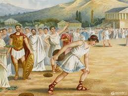

Древние Олимпийские игры
величайшие из эллинских национальных празднеств, спортивные соревнования, которые проходили в Олимпии на полуострове Пелопоннес в период с 776 г. до н. э. до 393 года н. э. За это время было проведено 292 четырёхлетних цикла Олимпийских игр. Проведение 293-й Олимпиады было отменено императором Римской империи Феодосием I, а Олимпийские игры были запрещены как языческие. Олимпийские игры считались одним из двух центральных событий в Древней Греции, другой гораздо более древней религиозной практикой были Элевсинские мистерии[1]. Несмотря на то, что античные Олимпийские игры имели глубокое религиозное значение, их центральным элементом являлись спортивные состязания. Победитель Олимпийских игр именовался олимпиоником
Современный спорт
Современный спорт представляет собой мощную индустрию, включающую особую систему производства спортивных рекордов. В ней задействованы наряду со спортсменами и тренерами менеджеры, спортивные врачи, психологи, научные сотрудники. Средства массовой информации постоянно «раскручивают» широкомасштабные соревнования до уровня главных событий жизни общества. Тем не менее, не следует представлять современный спорт как единый феномен, имеющий одну цель, функции и общие закономерности развития. Современный спорт многолик и разнообразен. В систему спорта входят такие его разновидности, как массовый, детско-юношеский, школьный, студенческий спорт решающие задачи оздоровления и формирования спортивной культуры подрастающего поколения. Спорт высших достижений (олимпийский и профессиональный спорт) направлен на достижение высоких спортивных результатов и побед. Эти разновидности объединяют общие функции: зрелищная, политическая, экономическая. Спорт высших достижений транслирует особый образец стиля жизни, путь достижения успеха, демонстрирует высокую спортивную технику, умение обыграть соперника. Для многих зрителей эта модель становится эталоном для подражания не только в спорте, но и в других сферах жизнедеятельности. Однако спорт высших достижений породил большое количество противоречий, которые не позволяют современному спорту позитивно развиваться, зачастую дискредитируют его и формируют негативное отношение людей, особенно родителей, к спортивным занятиям. Все чаще общественное мнение оценивает современный спорт как опасную для человека сферу деятельности. Цель исследования: провести социологический анализ противоречий современного спорта и предложить пути их преодоления.